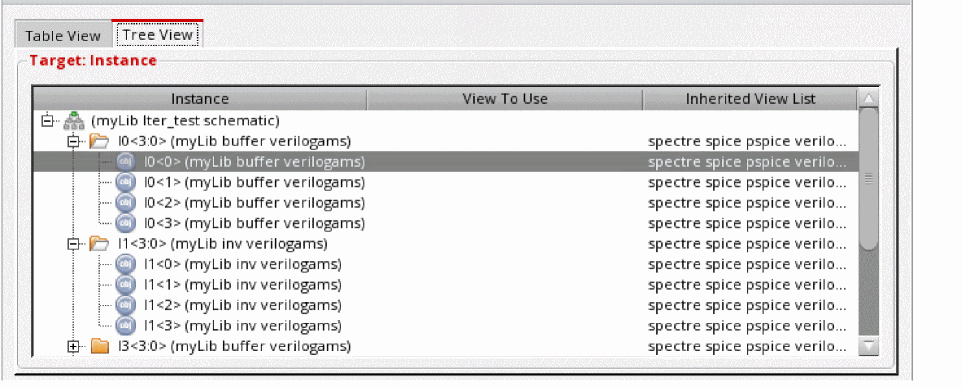
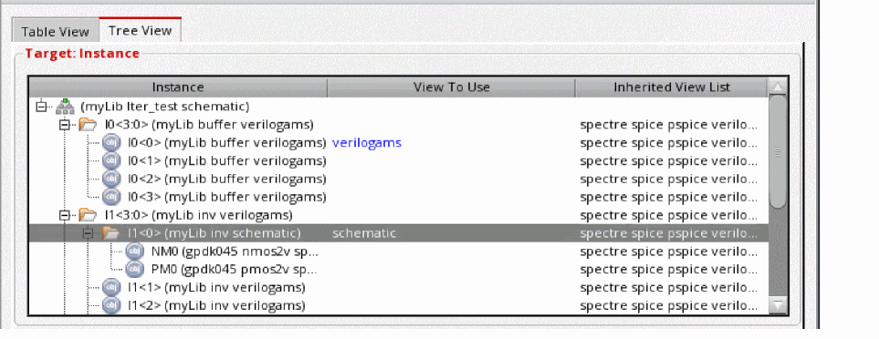

Changing Library Bindings on a Per-Instance Basis
You can define an instance-level library list that overrides the global and cell library lists for a single instantiation of a cell. The library list determines the library from which the instance is obtained. Libraries are listed in order of preference—if the instance is found in the first library in the list, it is used; if it is not found, the second library is searched, and so on.
The instance-level library list:
- Applies to only one instantiation of a cell
- Can apply to multiple objects—if the cell that contains the instance is used in multiple places in the design, the library binding applies to the instance in all those locations
- Is inherited by all components in the hierarchy below the instance
An instance level library binding can be overridden by an occurrence binding.
To create an instance-level library list,
- Choose View – Parts Table.
- In the Cell Bindings table, select the cell that contains the instance you want to change.
-
In the Instance Bindings section, click in the Inherited Lib List column of the instance whose binding you want to change.
The field becomes editable. If the field does not become editable, the library is fixed for your design and cannot be changed. - Edit the inherited library list. The library list that is currently displayed is the library list inherited from higher levels of the hierarchy. Type the libraries in order of preference.
-
Press
Return. -
To view the changes in the configuration, click the Update icon in the toolbar.
If you selected the Automatic Update option in the Options form, this step is not required because your configuration is automatically updated. -
To save the changes, choose File – Save or press
Control-s.
To set view bindings separately for individual bits of an iterated instance,
-
Open the view in Hierarchy Editor and switch to the Tree View.
 - Expand an iterated instance by clicking the + icon preceding it.
-
Right-click each bit for which you want to change the view bindings and choose Set Instance View – <view name>.
The View To Use column in the Tree View is updated with the new binding information.
In the preceding screenshot, iterated instance bit l1<0> is bound to the schematic view whereas the rest of the bits of iterated instance I1<3:0> are bound to verilogams. - Click Recompute the hierarchy on the toolbar.
You can similarly use the Table View to set iterated instance bit bindings.
Iterated instance bit bindings are currently only supported by the AMS UNL netlister.
Related Topics
Rules Definition at the Instance Level
Changing Library Bindings on a Per-Instance Basis
Defining Stop Points on a Per-Instance Basis
Defining Bind-to-Open on a Per-Instance Basis
Defining Stop Points on a Per-Instance Basis
Return to top